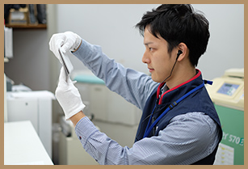

ONE DAY REPORT密着！若手社員の1日
趣味 : ハリネズミのお世話
カメラのキタムラ事業部に配属になった中村賢人。入社後、「思い出を未来に刻む仕事」とはどのような仕事なのかを基礎業務を通して学んでいます。この後、店舗運営等のマネジメントを学ぶことになるのですが、まずはそんな彼の一日を追ってみました。最後には、今後の夢を語っています。
9:30 朝礼
店舗のオープン前、今日も朝礼が始まりました。
昨日までの情報と、この日の目標を全員で共有。
そして元気に声を出し、お客さまをお出迎えする準備が整ったようです。
毎朝、オープン前に行われる朝礼。
会社の方針やお店の目標を改めて共有し、それぞれの意思を統一します。また、カメラのキタムラとスタジオマリオのスタッフが一緒になって朝礼を行い、お互いの情報を交換。
そこで得た情報をもとに、営業中はお互いのお客さまをご案内することもあります。
9:45 ネット注文
開店前、店舗のパソコンを確認すると、お客さまからのインターネット注文がなんと１０件も入っていました。
中には高額な一眼レフカメラをご注文されたお客さまもいらっしゃいます。
商品の到着を心待ちにしているお客さまの期待に応えるべく、さっそく受注した商品の発注にとりかかります！
キタムラではインターネットで注文したお客さまの８割がお店での受け取りをご希望されています。
これは店舗での販売だけでなく、ネット会員のオススメやＷＥＢでの販促活動が成果に結びついている証。
ネット購入でも、スタッフの手で直接お客さまに商品をお渡しすることで、安心感も提供しています。
11:00 ラボ
店舗の奥に見えるその大きな姿はデジタルミニラボシステム。
お客さまの思い出を写真やフォトブックなど、形にしていく機械です。
仕上がった写真にキズや汚れなどないか、色や明るさは適正になっているか、最後に１枚１枚確認しています。
製造から販売まで、お客さまの思い出をお店の中で形にできるのがキタムラの特徴。お客さまと一緒になって選んだ写真やフォトブックがその場で形になり、すぐにお渡しができます。受け取ったお客さまの笑顔を想像すると、一瞬たりとも気が抜けません。
13:00 接客
この日ご来店されたのは常連のお客さま。
以前買っていただいた、カメラを手に持っていらっしゃいます。
どうやら旅行先でたくさん写真を撮ってこられたようです。カメラの性能にも大満足のご様子。これからどの写真をどんな形で思い出に残すか、お客さまと一緒に決めていきます！
キタムラの接客は単なる販売業務ではありません。お客さまとの会話の中から、ニーズを見つけだし、一人ひとりに合った商品の提供を心がけています。
そのためにはカメラや写真の知識だけでなく、お客さまと会話を広げるコミュニケーション力もとても大切。
お客さまが、またこのお店に足を運びたいと思っていただけるよう、親身になって応対をします。
15:00 売場作り
売場作りも大切な仕事の一つ。日々メンテナンスを行っています。
今日は新製品の入荷日。注目の新製品だけに、いかにお客さまの目に留まるようにレイアウトするか、売場作りにも力が入ります。
キタムラは店舗によって売場の作り方が違います。それは各店の担当者の想いが売場に表れているから。売場作りとは想いが形に表れる仕事でもあるのです。お客さまにとって見やすく、手に取りやすい売場はどんな売場か？自分自身がお客さまになったつもりで考え、売場を作りあげていきます。
16:00 ミーティング
この日は月一回行われる店内会議の日。ここでは、会社全体の方針や数字、その月の店舗の目標を全員で共有します。
今回テーマに上がったのが、新商品のフォトブックをどうやって拡販していくか。若手からベテランスタッフまで、全員が意見を出し合っています。
情報共有はキタムラで最も大切にしている考え方。年齢や経験に関係なく、意見を出し合うことでお店も人も成長します。お店の成長には、幅広い考えが必要なため、若手の意見も重要視されます。
真剣に話し合った後は、皆で楽しい飲み会。
お店のチームワークを高める大切な場でもあります。
18:30 数値管理
１日の終わりにはその日の成果を数字で確認します。
この日は連休明けということもあり、フォトブックの売上が絶好調。
また、朝礼で共有したこの日のカメラ販売台数の目標も達成したようです。
キタムラでは店舗の予算（＝目標数値）は各店の店長が決めています。本部から与えられた目標ではないのです。自分たちで決めた目標だから、試行錯誤しながら頑張れる。
毎日の数字の動きを敏感に読み取り、日々改善を積み重ねていくことで、予算の達成を実現しています。
日本中のお客さまの思い出を未来に残す
以前から写真や映像は好きでしたが、入社後は更に「思い出を残す大切さ」を実感しています。お世話になった先輩へのサプライズで、写真集を作りにくる学生、結婚式のウェルカムボードを作りに来られるお客さま。様々なお客さまとの関わりから、写真は「撮る時だけでなく、未来の笑顔も作るもの」だと感じました。 今の私の目標は、30歳までにブロック長になることです。なぜなら、広範囲のエリアの経営をする立場になれば、仲間の数もお客様の数も増え、その分多くの思い出を未来に残せるということです。これからもデバイスはどんどん変化していくと思いますが、思い出を残したい、楽しみたいという気持ちは人間である以上変わることはありません。だからこそ日本中にワクワクするような新しい写真・映像体験を、提案していきたいと思います。
趣味 : ピアノ、合唱
入社後、スタジオマリオに配属となった松岡里奈。お宮参りや七五三還暦のお祝い等々、様々なお客さまの記念日に携わっています。そんな彼女の1日に密着！どのようにお客さまの思い出を形に残しているのか？その様子を是非、ご覧ください。最後には、今後の夢も語っています。
9:45 予約状況確認
朝礼後に、その日の撮影スケジュールを全員で確認！
ご予約のお客さまの中に見覚えのある名前があった模様！毎年お誕生日の撮影にきてくれるお子さまでした。「大きくなったかな？」「今年はどのように撮影しようか？」今回の撮影も楽しんでいただけるように、綿密に打ち合わせをしています。
毎朝、必ず行う予約状況の確認。
ご予約のお客さまの情報を確認し、撮影スケジュールを頭にインプットします。
全員で一日の流れや担当を共有することで、よりスムーズにお客さまをご案内することができるのです。
お客さまにマリオでの一日を楽しんでいただくために、事前準備は欠かせません。
10:30 衣装選び
初めてご来店されるお客さま。スタッフ全員の力を合わせて、素敵な思い出をカタチに残していきます！
「何色が好き？」「とっても似合うね！」と一緒に楽しみながら衣装選びをしています。わくわくしたようなお子さまの笑顔を見ると、衣装選びも楽しい思い出になっていることが伝わってきます。
お客さまの撮影目的に合わせてドレスやアクセサリーを、一緒に選んでいきます。
衣装は400点以上。何回でもお着替えができるので、「どれにしよう？」とお客さまが悩んでしまうことも。
そんなときは、“お子さまを最高に輝かせる衣装”をスタイリストのように提案します。
11:00 着付け・ヘアメイク
お着替え室から楽しそうな笑い声が！先ほどまで、少し緊張気味だったお子さまが楽しそうにお話をしています。そして、あっという間にお姫さまに変身！お着替え室を出た瞬間、感無量な表情でお子さまを見つめるご家族さま。そんな姿に彼女も胸がいっぱいになっているようです。
着付けやヘアメイクは、お子さまがいつもと違う自分に変身できる“夢の時間”。お子さまの負担にならないように、“早く・楽に・きれい”に着付けます。
そして、カメラ写りを計算し、前から見たときにキレイに見えるように、衣装にぴったりのヘアをセットしていきます。
また、撮影時にたくさん笑顔を見せてくれるよう、気分を盛り上げることも大切なポイント！
11:30 撮影
ボール遊びに、食べ物当てクイズ、ぬいぐるみが登場したりと、次々に繰り出される遊びの数々に、お子さまも満面の笑顔に！ご家族さまも巻き込んで撮影をしているので、スタジオはとってもにぎやか！お子さまだけでなく、スタジオにいる全員の幸せな笑顔が溢れる空間です。
お子さまに合わせて、一緒に遊びながら撮影をすることで自然な笑顔を逃しません。
お子さまのかわいい表情やポーズをできるだけ多く撮影して、お客さまにご満足いただけるカットを残していきます。さらにスタッフと連携して安全を心がけ、ケガをしないように周囲への気配りを忘れません。
12:30 写真選び
「可愛い写真が多くて選べない！」と迷われているお客さま。
彼女にとっては最高の褒め言葉をいただきました。しかし、喜んでばかりではいられません。『この写真にしてよかった！』と思っていただけるようにしっかりとアドバイスをしています。
1回の撮影で撮る写真は500カット以上になることも。そのため、写真選びのポイントをアドバイスするのも腕の見せ所です。
そして、台紙やアルバム、額などたくさんある商品の中から、お客さまと一緒に楽しみながら、“最高の写真”を“最高の形”で残していただけるように提案をしています。
14:00 トレーニング
予約の入っていない時間に着付けのトレーニングを始めたようです。
マネキンをお子さまだと思って、丁寧かつスピーディーに着付けています。
タイムを計っていたストップウォッチを見て、嬉しそうな表情。前回よりも、着付けタイムが早くなった様子。日々の成長をこんなところでも感じられます。
お客さまに素敵な思い出を残していただくためには、日々のトレーニングも欠かせません。
新人、ベテランに関係なく全員がトレーニングに励みます。
この日々の積み重ねが、お客さまの笑顔を生んでいるのです。
16:00 店内会議
この日は月一回の店内会議。今回のテーマの一つは七五三の魅力的なディスプレイ作りです。
『お子さまの思い出はマリオが残す！』という意気込みが強いスタッフばかり。そのため、全員が積極的に意見を出し合っています。
この日も一つ、“お客さまに喜んでいただくためのアイデア”が生まれたようです。
これからのお店の方針やキャンペーンなどを月一回の店内会議で話し合います。
座って話し合いをするだけでなく、時にはスタジオに移動してポージングやスタジオセッティングの研究をすることも！
スタジオマリオでは“チームワーク”でお客さまの輝く表情を引き出しているのです。

人を大切にできるリーダーになりたい
私はまだ新米店長ですが、将来は私の今の上司（ブロック長）のように、『心から仲間を大切にできるリーダー』になりたいと思っています。他店舗の仲間との仲を取り持ってくれたり、何時間でも相談に乗ってくれる私の上司。真剣に私達を思ってくれる親身な姿に、まだ入社5年目なのにすごいなぁと思うことばかりです。チーム一丸となって、特別な一日を残すお仕事だからこそ、仲間の一人ひとりとしっかり向き合っていきたい。店長になって間もない私ですが、多くのことを学んでいます。今はまだまだ余裕もありませんが、目指すべき背中を追いかけて、これから最高のチームをつくっていきます。